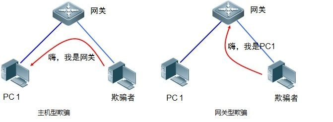

本章目标
在你控制的 A、M、B 隔离实验网络中，观察 A 的 ARP 邻居映射变化、核对单向 ICMP 转发路径，再按步骤恢复。A 是控制机，M 是实验中间机，B 是小车；本实验旧资料中的 C 对应 M。只检查 A 一侧，不对 B 发送伪造 ARP，不做双向中间人，也不发送 ROS 速度命令。
观察到 A 的邻居项指向 M，只能说明该项发生变化；须另行核对转发路径和恢复结果。桥接 Wi-Fi 可能改变链路上可见的 MAC，因此每轮都从各端当前接口读取身份和地址。

准备与范围控制
需要隔离网络、可在 B 本机独立恢复邻居映射的路径、现场看车人和实体停车办法。仅有 SSH/A 控制不构成独立恢复路径。需要现成的实验五工具包、tcpdump/离线 Wireshark，以及可写的本轮证据目录；不在实验中临时下载或安装工具。
范围：唯一实验对象是本组 A 与 B；M 只对 A 做一次限时映射观察。禁止校园网、公共 Wi-Fi、网关、旁观设备或其他主机。任一身份、地址、真实 MAC、接口或恢复路径不清楚，停止在只读阶段。
操作步骤
分清三台机器
A 控制机 / M 实验中间机 / B 小车 分别在各自终端运行：
hostname date -Is ip -br -4 addr ip -br link ip -4 route核对屏幕上的主机名、当天 IPv4、接口名与路由确属对应机器。少一台、接口无地址或三端角色认错：停止，不运行攻击工具。
记录当天拓扑
Windows / VMware 与 A、M、B 核对当前 AP、VMnet 桥接目标和三端连接关系；从各端自己的接口读取 MAC，再相互核对。用本轮实测地址填写参数，不复用历史或课件示例值。
看见路由经未知网关、AP 客户端隔离、MAC 不一致或时钟差无法解释：停在网络排查，不能通过换目标“试一试”。
做无发包环境检查
M，普通用户终端 在现有资料目录运行：
cd ~/lab5_prep bash 工具/check_attacker_env.sh核对检查器版本、必需文件和权限；此检查不连小车，也不证明现场网络已通。
出现 FAIL、缺文件或哈希不符：保存原文并停止；不要重装、恢复快照或用合成抓包代替现场检查。
确认车辆与控制基线
A 的 ROS1 shell / B 看车人 查当前 ROS master、传感器与速度话题状态；确认没有导航、循线或旧遥控争用。车保持静止，实体停车人就位并能直接停车。未能确认任一项：本轮不做 ARP。
确认 B 端恢复路径
B 本地终端或独立恢复通道 实际打开恢复入口，确认 B 的接口 MAC 可在 B 本机查到。记录操作者、地点和接管方式，但不写密码。
只靠 A/M 网络或 SSH 恢复，或 MAC 来源不明：停止在基线，不开始映射实验。
M 建立唯一新轮次
M，参数终端 按实验五资料复制示例配置为本机参数文件，填写本轮 A/B/M 地址与 M 接口；创建新 RUN 目录并保存参数副本与机器身份。所有终端只载入这一轮目录。
参数中仍有示例值、目录不可写或终端显示不同 RUN：停止。不要覆盖旧轮次，也不要把凭据写入配置。
验证路由与原状态
M，参数终端 在已载入本轮参数的终端查询 A、B 的路由，确认走实验接口且不是未知网关；只做少量定向连通性检查：
ip -4 route get "$CTRL_IP" ip -4 route get "$ROBOT_IP"逐项把 M 的原状态保存到本轮目录：
sysctl -n net.ipv4.ip_forward > "$RUN/ip_forward.before" sysctl -n net.ipv4.conf.all.send_redirects > "$RUN/send_redirects_all.before" sysctl -n "net.ipv4.conf.$IFACE.send_redirects" \ > "$RUN/send_redirects_iface.before" cat "$RUN/ip_forward.before" "$RUN/send_redirects_all.before" \ "$RUN/send_redirects_iface.before"三份文件都应存在，内容各为一个
0或1。任一路由不直达、连通失败或原值未成功保存：不改 sysctl，不发 ARP。开始前再次口头对表
A 控制机 / M 实验中间机 / B 小车 操作者核对本轮唯一目标、20 秒上限、停车人和恢复人；看车人确认车辆静止。记录轮次编号，不拍摄个人账号或秘密。
任何人对目标或恢复步骤有疑问，取消这一轮，转为离线 PCAP 学习。
开只读抓包
M，抓包终端 在实验接口启动仅包含 ARP 及 A/B 之间 IP 流量的本轮抓包，写入新 RUN；检查 tcpdump 显示的监听接口和过滤条件。抓包文件名、启动时间记入现场表。
接口或过滤条件不符、文件没有写入：先停抓包并解决；不得继续发包。
仅对 A 做一次限时映射观察
M 实验工具；A 观察 使用实验五资料中已审核的单目标工具，把范围限定为“A 认为 B 的地址对应 M”，只运行一次、最多 20 秒；不得启动第二方向工具。A 只读查看对应邻居项，并做少量定向 ICMP 检查。车仍静止，不启动 ROS 遥控。
看到 A 的邻居项短暂指向 M，或 ping TTL 与经 M 转发相符，记录原始输出即可；这仍不证明双向转发。出现车辆运动、其他邻居被改、路径异常、工具超时或范围外流量：立即停发，进入第 11 步恢复。
先停止映射工具
M，发包终端 达到时限即正常结束；若未自动退出，按工具说明停止本轮精确进程。检查该进程已消失并保留退出码与清理日志。
进程状态不明：不要开始下一轮；保持车辆静止，使用独立恢复通道处理。
恢复 A 的真实邻居映射
B 本机 / A 管理员；M 观察 停止发送后，在 B 本机再次读取真实接口 MAC；只有 A 的目标邻居项仍指向 M 时，才在 A 删除这一条动态项：
sudo ip neigh del "$ROBOT_IP" dev "$A_IFACE" ip neigh show "$ROBOT_IP" dev "$A_IFACE" ping -c 3 "$ROBOT_IP" ip neigh show "$ROBOT_IP" dev "$A_IFACE"核对 A 重新学习到的 MAC 与 B 本机当日读取值一致，并确认回到直连路径。映射仍指向 M 或 MAC 对不上：不清空整张邻居表、不继续实验；由 B 本地恢复人修正唯一条目并留证。
恢复 M 的系统参数并结束抓包
M，参数终端 先人工确认三份备份都存在且各只含
0或1，再按本轮原值恢复并读回：sudo sysctl -w "net.ipv4.ip_forward=$(cat "$RUN/ip_forward.before")" sudo sysctl -w "net.ipv4.conf.all.send_redirects=$(cat "$RUN/send_redirects_all.before")" sudo sysctl -w "net.ipv4.conf.$IFACE.send_redirects=$(cat "$RUN/send_redirects_iface.before")" sysctl net.ipv4.ip_forward net.ipv4.conf.all.send_redirects \ "net.ipv4.conf.$IFACE.send_redirects"三项读回必须与备份逐一相等。随后在抓包终端正常结束 tcpdump，保存结束统计。备份缺失或恢复值不一致：保持实验停止，先由系统管理员按实际原值恢复，不能猜成 0 或 1。
验证停止状态并归档
A / M / B 确认无本轮映射进程；A 邻居表为 B 真实 MAC、直连通信正常；M 参数回到原值；B 静止。保存 A 前/中/后邻居输出、M 日志、原始 PCAP、结束计数与 SHA-256。
有任何一项未确认：记为“未恢复/待核查”，先保持车辆静止，不开始后续实验。
检查与证据
- ARP 回复只证明观察到 ARP 帧；映射状态要看 A 的邻居表，转发路径还需按同一 ICMP 标识/序号配对 A→M 与 M→B 帧，并检查 TTL 和以太网地址。
- 逐项保存三端身份表、B 本机真实 MAC 来源、实验范围、RUN 参数与原值、邻居表前中后、tcpdump 统计、工具日志及恢复值。
- 记录应分别说明 A 侧邻居映射、A→B ICMP 观察和恢复证据；这些检查不表示双向中间人、ROS 改写或车辆受控。
- PCAP 可能含局域网元数据，只保存在课程实验目录；公开页面不附原始现场包。
常见问题
- VM 显示无地址或 NO-CARRIER：只读核对 VMware 桥接、无线网络与接口连接状态。
- ping 不通或路由经网关：停止映射操作，检查 AP 隔离、重复地址和接口选择；不要扩大扫描范围。
- A 未看到映射变化：保留日志和抓包，核对接口与目标；不增加时长、不启用第二方向。
- Wi-Fi 桥接出现不同 MAC：记录各设备本机证据，重新画拓扑；不能用假设填补恢复地址。
- 恢复后仍指向 M：先确认发包进程已退出，再用 B 本机 MAC恢复 A 的单条动态项；不得全局清 ARP。
收尾
顺序固定为：保持停车 → 停止单侧工具并确认进程退出 → 恢复 A 的真实邻居映射并验证直连 → 恢复 M 的已保存系统参数 → 停止抓包并保存计数 → 核对 B 静止和无残留进程 → 归档日志与哈希。不得把现场 PCAP、真实地址、账号或凭据放到公开站点。
本章证据范围
现场轮次、离线合成检查和课件示意分别标注。单侧 ICMP 观察不能支持双向引流、ROS 控制或运动影响结论；本章没有要求运动小车。